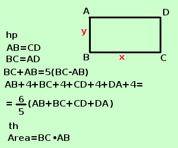

|
sviluppo Risolvere il seguente problema In un rettangolo la somma delle dimensioni e' uguale al quintuplo della loro differenza, mentre se si aumentano di 4a le dimensioni il perimetro del rettangolo cosi' ottenuto diventa i 6/5 del precedente. Calcolare l'area del rettangolo in un rettangolo i lati opposti sono uguali le dimensioni di un rettangolo sono la base e l'altezza A destra traccio la figura e scrivo l'ipotesi(hp) e la tesi(th)  Per scrivere l'ipotesi scorro il testo e lo riscrivo in linguaggio geometrico: rettangolo scrivo AB=CD e BC=DA "la somma delle dimensioni e' uguale al quintuplo della loro differenza" scrivo AB+BC=5(AB-BC) "se si aumentano di 4a le dimensioni il perimetro del rettangolo cosi' ottenuto diventa i 6/5 del precedente" scrivo AB+4+BC+4+CD+3+DA+4=6/5(AB+BC+CD+DA) La tesi dice che devo trovare l'area, per trovare l'area ho bisogno della base BC e dell'altezza AB Come incognite, mi conviene indicare la base e l'altezza, una volta trovati i loro valori, moltiplicandoli trovero' l'area BC=x AB = y "la somma delle dimensioni e' uguale al quintuplo della loro differenza" si scrive x + y = 5(x - y) x + y = 5x - 5y 4x - 6y = 0 2x - 3y =0 se si aumentano di 4a le dimensioni il perimetro del rettangolo cosi' ottenuto diventa i 6/5 del precedente" si scrive x + 4a + y + 4a + x + 4a + y + 4a =6/5 (x + y + x + y) 2x+ 2y + 16a = 6/5 (2x + 2y) 5(2x + 2y + 16a) = 6(2x + 2y) 10x + 10y + 80a = 12x + 12y 2x + 2y = 80a x + y = 40a Faccio il sistema
risolvo con il metodo di sostituzione, ricavo x dalla seconda equazione e lo sostituisco nella prima
quindi AB = 16a BC = 24a ora posso trovare l'area Area = BC·AB = 24a ·16a = 384a2 L'area vale 384a2 |